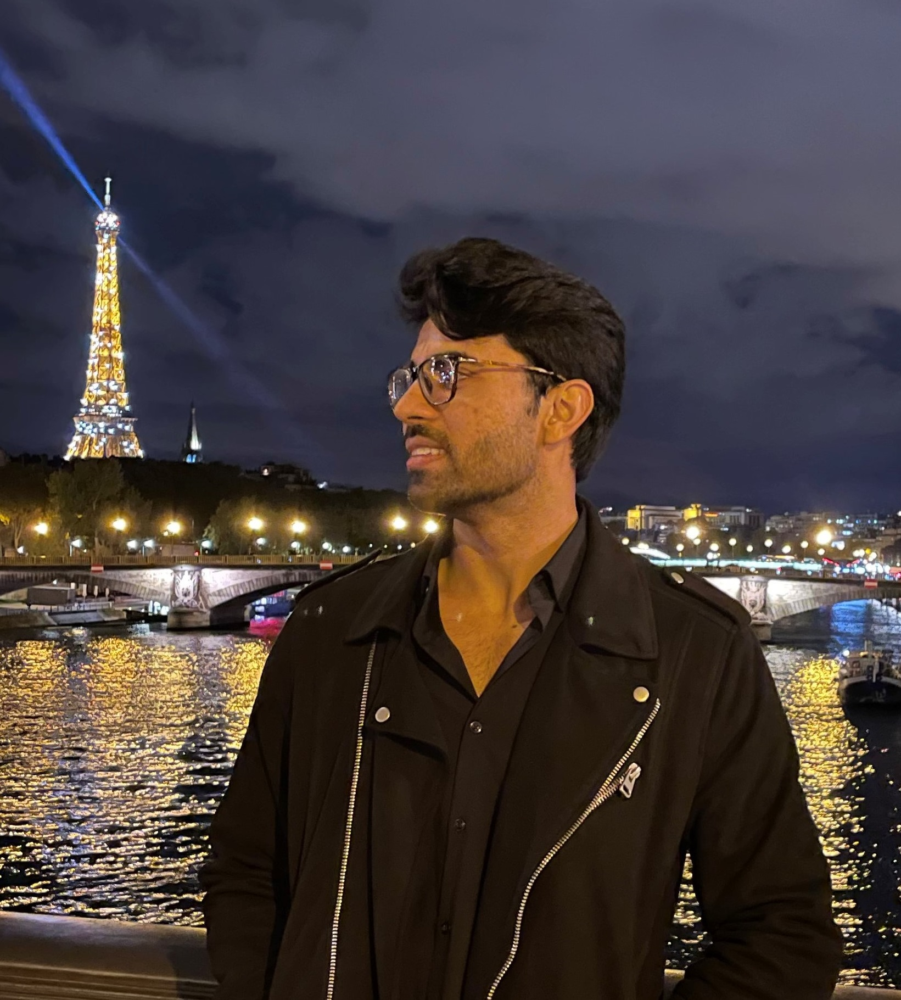
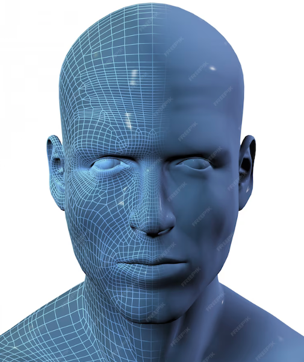
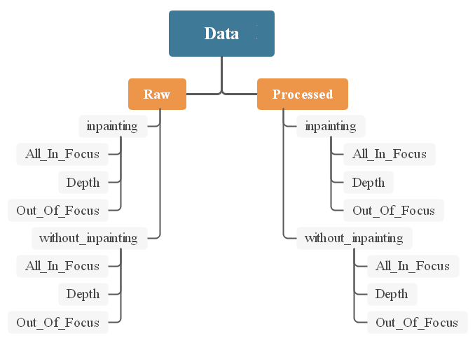
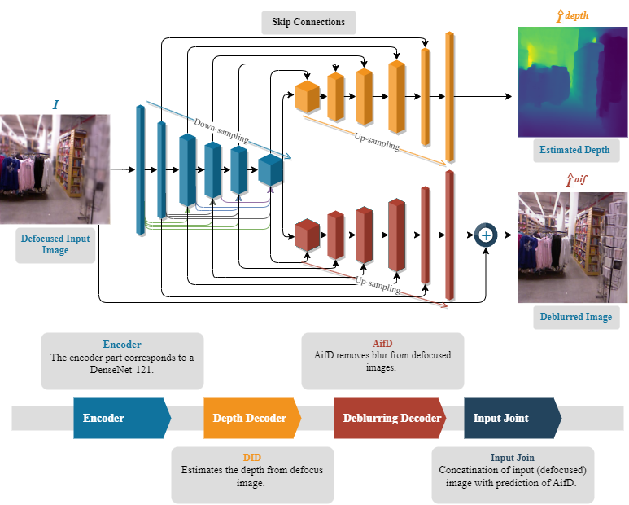
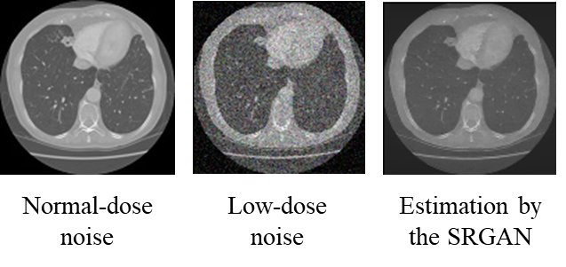

Hello, I'm
AI Researcher · Computer Vision · 3D Imaging · Forensic AI
Research Associate at IVC Lab, Edge Hill University, UK

I am currently working as a Research Associate at the IVC Lab, Edge Hill University, Ormskirk, UK. I am developing interpretable AI models for single-cell phenotyping in forensic and clinical applications for the SCAnDi project, funded by the UKRI Economic and Social Research Council.
My work focuses on morphological classification of individual cells (sperm, skin, blood) and assessing cell integrity, integrating LLM-based interpretation to generate biologically grounded explanations for model predictions, advancing responsible AI deployment in critical decision-making contexts. This includes multi-modal analysis combining microscopy imaging with molecular data, with applications spanning forensic science, clinical diagnostics, precision medicine, and DNA analysis.
Previously, I worked as a Postdoctoral Research Associate at the IMAGE Group within the GREYC Lab, CNRS, University of Caen, Normandy, France, developing generative models for geometric and color completion of partial 3D color meshes of human scans, with applications in AR/VR/XR and 3D Avatar editing.
I completed my Ph.D. from the University Politehnica of Bucharest, specializing in 3D computer vision — developing innovative methods for monocular depth estimation utilizing defocus blur and image defocus deblurring. During my PhD, I worked as an Early-stage Researcher in the H2020-MSCA-ITN MENELAOS-NT project.
Single-cell analysis in forensic science: developing interpretable AI for cell phenotyping, integrating LLM-based interpretation for responsible AI deployment in forensic and clinical applications.
IVC Lab, Edge Hill University, UK
Working on the SCAnDi project (Single-cell and single molecule analysis for DNA identification), funded by the UKRI Economic and Social Research Council. The project brings together multidisciplinary expertise spanning single-cell genomics, DNA profiling, microfluidics, AI, and forensic genetics.
GREYC Lab, CNRS, University of Caen, France

Research Associate on the COSURIA project. Designed methods based on generative neural networks to perform geometry and color completion on colored 3D meshes of people scans for extended reality applications.
CEOSpace Tech, University Politehnica of Bucharest, Romania
Assistant Researcher for the MENELAOS-NT European Training Network. Research focused on acquiring 3D scene geometry using passive devices and Deep Neural Networks for monocular depth estimation from defocus blur.
INSITU Engineering, University of Vigo, Spain

Research stay exploring LiDAR and TOF cameras to develop the iDFD dataset — an open-source real dataset for Depth from Defocus for 3D indoor applications.
CiTIUS, University of Santiago de Compostela, Spain

Collaboration with CiTIUS for the MENELAOS-NT project, developing 2HDED:NET for joint depth estimation and image deblurring from defocused images.
MIDL-NCAI, COMSATS University Islamabad, Pakistan

Master's research at the Medical Imaging and Diagnostic Lab (MIDL) affiliated with the National Center of Artificial Intelligence (NCAI) under HEC Pakistan, developing CAD system solutions using advanced Computer Vision and Deep Learning.
University POLITEHNICA of Bucharest (UPB), Romania
Thesis: "Deep Depth from Defocus for Near Range and In-Situ 3D Exploration"
Supervisors: Prof. Daniela Coltuc & Prof. Mihai Datcu
Lab: CEOSpace Tech
COMSATS University Islamabad, Pakistan
Thesis: "Generative Adversarial Networks for Enhancing Low-Dose CT Scans"
COMSATS University Islamabad, Pakistan
European Commission H2020 · 2020 — 2024
COMSATS University Islamabad · 2017 — 2020
COMSATS University Islamabad · 2012 — 2016
Selected publications. For the full list, visit my Google Scholar profile.
IEEE Transactions on Computational Imaging
SCIA — Scandinavian Conference on Image Analysis
DICTA — Digital Image Computing: Techniques and Applications
IEEE International Conference on Image Processing (ICIP)
26th International Conference on Automation and Computing (ICAC)
INCoS — International Conference on Intelligent Networking and Collaborative Systems
BWCCA — Broadband and Wireless Computing, Communication and Applications
Interpretable AI models for single-cell phenotyping. Morphological classification of cells with LLM-based explanations. Multi-modal analysis combining microscopy and molecular data.
Generative neural networks for geometry and color completion on 3D meshes of human scans. Creating 3D avatars for extended reality (AR/VR/XR) applications.
Joint depth estimation and image deblurring from a single out-of-focus image. Trained on NYU-Depth v2 and Make3D datasets.
Open-source real-world dataset for Depth from Defocus captured using LiDAR and TOF cameras for 3D indoor applications.
Generative Adversarial Networks for enhancing low-dose CT scans. Computer Aided Diagnostics system using advanced Deep Learning techniques.
Novel technologies for multimodal–multi-sensor data fusion. Advancing 3D imaging, perception, and environmental interaction using computer vision and machine learning.